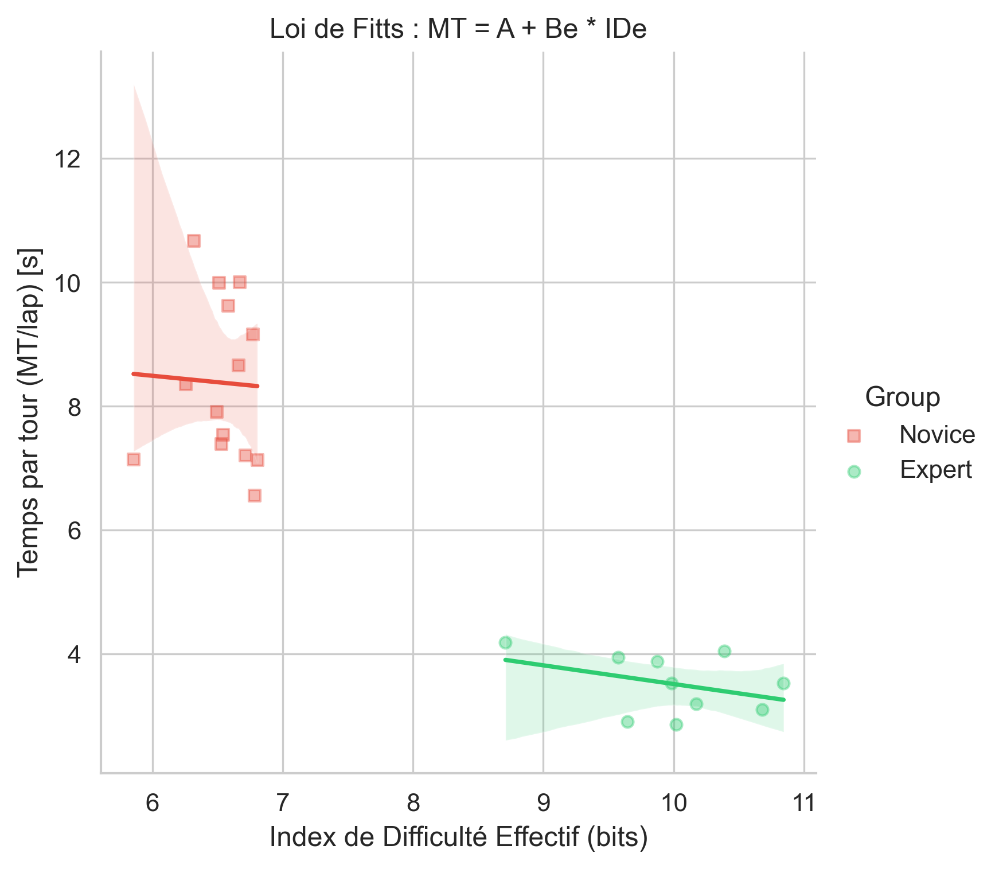
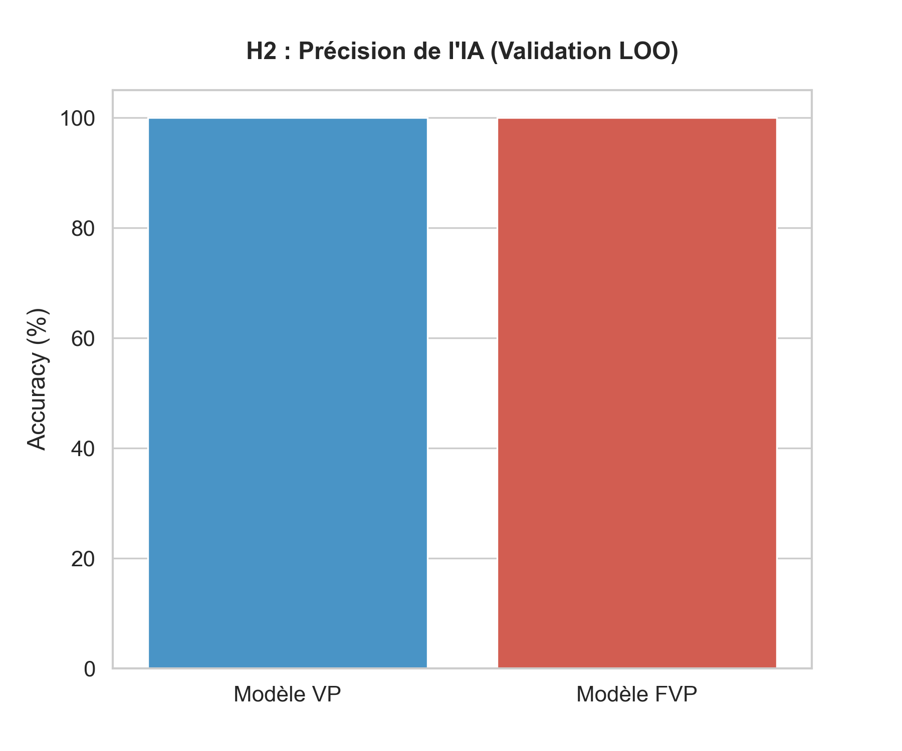

Étudiant Master HMS - EuroMov DHM
Cours : Engineering and Ergonomics of Physical Activity
Enseignant : Denis Mottet
Rapport de Projet : HaptiMed
1. Introduction et Objectifs
Ce projet vise à discriminer le niveau d'expertise chirurgicale en comparant l'expérience clinique aux performances biomécaniques quantitatives sur une tâche de pilotage (Steering Task).
2. Architecture du Système (Pipeline)
Le projet est structuré de manière modulaire pour garantir la reproductibilité :
[TRAITEMENT] (Butterworth 10Hz) -> sources/Clean_Data/process_data.py
[STATISTIQUES] (APA & Inférentiel) -> sources/Process_Stat/analysis_master.py
[IA] (Random Forest Classifier) -> sources/Process_Stat/analysis_ml.py
[RAPPORT] (Génération dynamique) -> sources/Paper/generate_master_report.py
3. Méthodologie Technique
3.1 Échantillonnage et Filtrage
Conformément au critère de Nyquist-Shannon pour le mouvement humain, les données sont acquises à 120 Hz. Un filtre passe-bas de Butterworth d'ordre 2 à 10 Hz est appliqué pour supprimer le bruit sans déphaser les trajectoires.
3.2 Métriques de Performance
Nous utilisons le Throughput ($IP_e$) comme mesure d'efficience motrice (ISO 9241-9) et le Log Dimensionless Jerk ($LDLJ$) pour quantifier la fluidité gestuelle.
4. Résultats et Analyses
4.1 Statistiques Descriptives (Loi de Fitts Classique)
$$ d = (\mu_E - \mu_N) / s_{pooled} $$Comparaison du Throughput effectif entre experts et novices en condition standard.

4.2 Modélisation de la Loi d'Accot-Zhai
$$ MT = a + b \cdot \int \frac{1}{W(s)} ds $$Régression linéaire du Temps de Mouvement (MT) selon l'Indice de Difficulté (IDe).

4.3 Résilience à la charge Haptique (Interaction)
$$ \Delta IP_e = IP_{e(VP)} - IP_{e(FVP)} $$Analyse de la dégradation de performance sous contrainte de force axiale.

4.4 Qualité du Geste (Smoothness)
$$ LDLJ = \ln \left( \frac{Duration^5}{PathLength^2} \int |jerk|^2 dt \right) $$Mesure de la fluidité via le Log Dimensionless Jerk.

4.5 Classification par IA : Apport des données de Force
$$ \text{Gain Acc.} = Acc_{FVP} - Acc_{VP} $$Précision de classification des modèles Random Forest.

5. Discussion et Conclusion
Les résultats valident l'hypothèse selon laquelle l'ajout d'une contrainte de force agit comme un révélateur d'expertise. La stabilité haptique, mesurée par la variabilité de la force, apparaît comme le paramètre le plus discriminant dans nos modèles de classification.
Déclaration d'intégrité : Ce projet a été développé avec l'assistance de l'IA (Gemini 3 Flash) pour l'optimisation des scripts de traitement, la structure du pipeline Python et la mise en forme de ce rapport HTML.